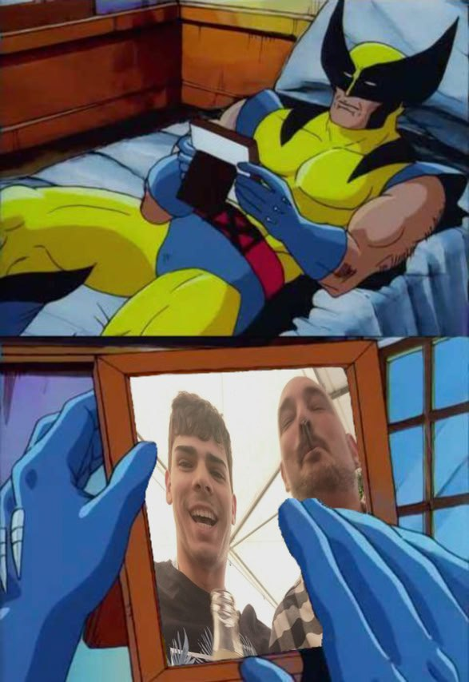
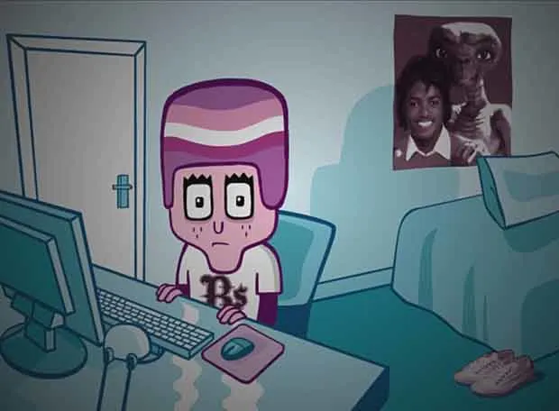

C: La máquina de la lógica. Si hay una forma óptima de hacer algo, la encontrará, la criticará y luego te dirá que eres un inútil por no haberlo visto antes.
J: Maestro de las palabras y diplomático de Cumstadística. Puede venderte cualquier idea con tal de que suene razonable, aunque sea una estafa piramidal.
U: La memoria encarnada y el más pachamamesco del grupo (aunque lo niegue). Cree que todo lo comercial es basura y que el arte de verdad es una película muda serbo-croata de 12 horas sobre la pesca artesanal.
El Loco de Fortnite
Sesa
Gurb
Calvo Cuñao

Personaje secundario. Tío de J
Enjuto Mojamuto
